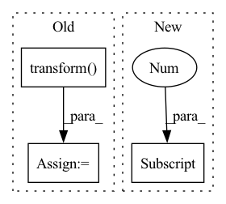

Pattern ID :3060
Before Change
return eigvals, eigvecs
def _two_view_evp(self, views):
R = [pca.transform( view) for pca, view in zip(self.principal_components, views)]
C = np.cov(R[1], R[0],rowvar=False) @ np.cov(R[0], R[1],rowvar=False)
return C, None
After Change
@ self.R_12.T
@ np.diag(1 / self.Bs[0])
@ self.R_12
@ np.diag(1 / np.sqrt(self.Bs[1] ))
)
return M, None
In pattern: SUPERPATTERN
Frequency: 4
Non-data size: 3
Instances Fragment ID: 11768275
Project Name: jameschapman19/cca_zoo
Commit Name: 9fe305f936767095fc791f2161092d03a00c5893
Time: 2022-10-21
Author: james.chapman.19@ucl.ac.uk
File Name: cca_zoo/models/_rcca.py
M Class Name: rCCA
N Class Name: rCCA
M Method Name: _two_view_evp(2)
N Method Name: _two_view_evp(2)
M Parent Class: _BaseCCA
N Parent Class: _BaseCCA
M File Name: cca_zoo/models/_rcca.py
N File Name: cca_zoo/models/_rcca.py
M Start Line: 136
M End Line: 137
N Start Line: 140
N End Line: 147
Before Change
def inference_begin(self, data):
data = self.preprocess(data, {})
data = self.transform( data, {})
self.inference_input = data
def inference_preprocess(self):
return [self.inference_input]After Change
self.inference_input = self.transform(
tf.constant(data["point"]), tf.constant(data["feat"]),
tf.constant(data["label"]), tf.constant([data["point"].shape[0] ]))
def inference_preprocess(self):
return self.inference_input Fragment ID: 11768274
Project Name: isl-org/open3d-ml
Commit Name: 67123f7e9d5dbbe6a73c42ef648093a7d25ace4a
Time: 2021-05-11
Author: sanskaragrawal107@gmail.com
File Name: ml3d/tf/models/sparseconvnet.py
M Class Name: SparseConvUnet
N Class Name: SparseConvUnet
M Method Name: inference_begin(2)
N Method Name: inference_begin(2)
M Parent Class: BaseModel
N Parent Class: BaseModel
M File Name: ml3d/tf/models/sparseconvnet.py
N File Name: ml3d/tf/models/sparseconvnet.py
M Start Line: 105
M End Line: 108
N Start Line: 187
N End Line: 191
Before Change
mask = torch.Tensor([[x is not None for x in lb] for lb in label_batch])
labels = [[0 if x is None else x for x in lb] for lb in label_batch]
if scaler is not None:
labels = scaler.transform( labels) // subtract mean, divide by std
labels = torch.Tensor(labels)
if next(model.parameters()).is_cuda:
mask, labels = mask.cuda(), labels.cuda()After Change
// Log and/or add to tensorboard
if (n_iter // args.batch_size) % args.log_frequency == 0 and (logger is not None or writer is not None):
lr = scheduler.get_lr()[0]
pnorm = compute_pnorm(model)
gnorm = compute_gnorm(model)
loss_avg = loss_sum / iter_count
loss_sum, iter_count = 0, 0 Fragment ID: 11768278
Project Name: aamini/chemprop
Commit Name: 64f98d60d13bc4bd7131ea4453b03163503cce0c
Time: 2018-10-02
Author: swansonk.14@gmail.com
File Name: train_utils.py
M Class Name: AnonimousClass
N Class Name: AnonimousClass
M Method Name: train(9)
N Method Name: train(9)
M Parent Class:
N Parent Class:
M File Name: train_utils.py
N File Name: train_utils.py
M Start Line: 24
M End Line: 54
N Start Line: 23
N End Line: 96
Before Change
img, target = self.dataset.__getitem__(index)
img = image_loader(img)
if self.transform:
img = self.transform( img)
return img, self.label_to_idx[self.pseudolabels[index]]
def __len__(self):
return len(self.imgs)After Change
Returns:
tuple: (image, pseudolabel) where pseudolabel is the cluster of index datapoint
return self.dataset.__getitem__(index)[0] , self.pseudolabels[index]
def __len__(self):
return len(self.pseudolabels) Fragment ID: 11768276
Project Name: biasvariancelabs/aitlas
Commit Name: 474aa87694776c18b7de4adb34e471fe51679c9d
Time: 2021-03-04
Author: ivan.kitanovski@gmail.com
File Name: aitlas/clustering/utils.py
M Class Name: ReassignedDataset
N Class Name: ReassignedDataset
M Method Name: __getitem__(2)
N Method Name: __getitem__(2)
M Parent Class: data.Dataset
N Parent Class: data.Dataset
M File Name: aitlas/clustering/utils.py
N File Name: aitlas/clustering/utils.py
M Start Line: 94
M End Line: 98
N Start Line: 89
N End Line: 89